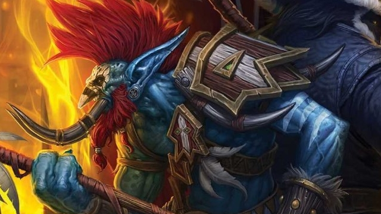

Vol'jin
Vol'jin was the son and former apprentice of the troll witch doctor, Sen'jin, who was leader of the exiled Darkspear tribe, that lived on a small island chain in Stranglethorn Vale. During this time period, the Darkspear trolls were almost wiped out by a human invasion, as well as constant murloc raids. Only through the timely intervention of Thrall and the orcs did any of the trolls survive. Sen'jin died bravely on the islands trying to save his people. With Sen'jin's death, Vol'jin became chief Shadow Hunter for the tribe. In order to repay Thrall for saving his people, Vol'jin pledged his loyalty and service to the Horde.
Shortly after the orcs left, a large group of trolls also sailed for Kalimdor, but Vol'jin was not among them. Instead, Vol'jin chose to weather the Sea Witch's wrath with the rest of tribe until the time came when they could leave. Finally, a year later, they gathered up all the supplies they could and left for the new orc nation of Durotar.
During the Third War, those of the Darkspear Tribe who were present fought alongside the orcs against the Burning Legion, without the leadership of their chieftain, who was still on Darkspear Isles at the time. After the war, Vol'jin settled the tribe upon the Echo Isles, just off the shores of Durotar. It wasn't long before a new threat appeared, however, in the form of Grand Admiral Daelin Proudmoore's expeditionary fleet. Vol'jin aided Rexxar, Rokhan, and Chen Stormstout in evacuating the Darkspear tribe, turning the three into wyverns, allowing them to attack the Alliance fleet from above and supplying them with a squadron of troll batriders. Outnumbered, he was forced to retreat, but he continued to aid Rexxar and Rokhan through his wise counsel, instructing Rexxar to recruit the Tauren and the ogres in the fight against the humans.
After helping the Horde stop the human invasion, Vol'jin led his tribe back to the Echo Isles. It was not to last, however, as a witch doctor named Zalazane used dark magic to enslave many of his Darkspear brethren, forcing Vol'jin to order the retreat to the mainland for fear his whole tribe would fall victim to the mad witch doctor. Vol'jin then founded Sen'jin Village along the southern coast of Durotar as a base with which to strike back at Zalazane. However, he was called to Orgrimmar to aid Thrall, leaving the recapture of his people's home to Master Gadrin. Though raids by the Kul Tiras Marines persisted in the Barrens and Durotar, these invasions were lesser threats and not directly aimed at Sen'jin Village.